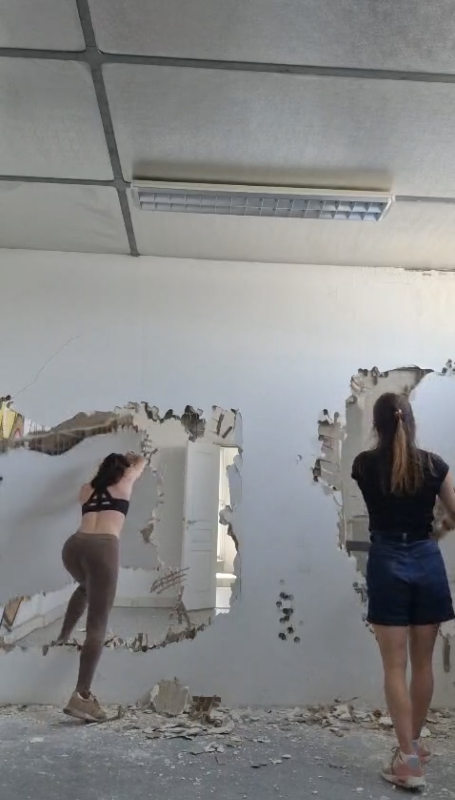
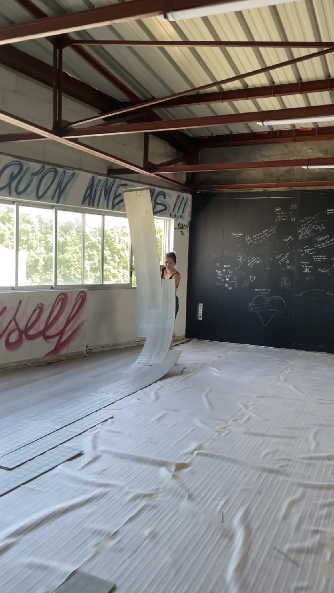
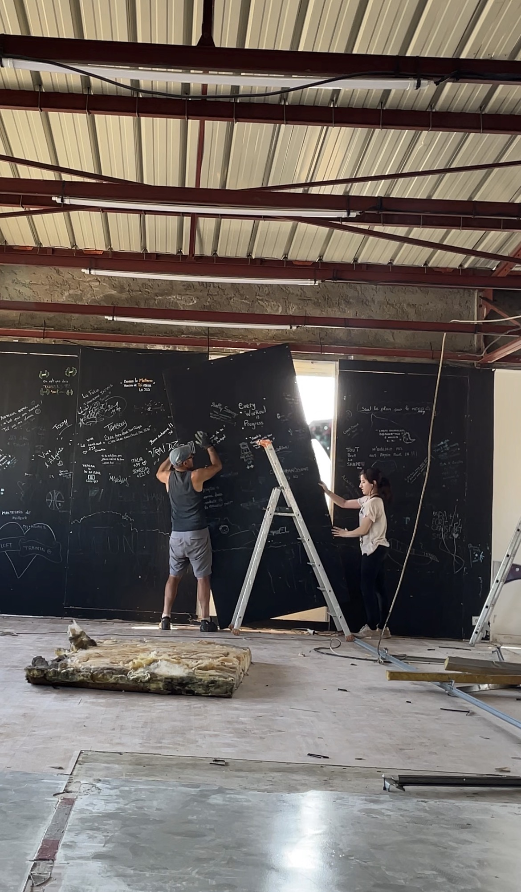

Si tu lis ces lignes, c'est que tu fais officiellement partie de l'aventure. 💜
Avant toute chose… merci.
Merci d'avoir envie de suivre ce projet alors qu'aujourd'hui, il n'est encore qu'un immense chantier.
Ces dernières semaines ont été intenses. Il y a eu des moments où tout allait très vite, d'autres où j'ai eu l'impression que rien n'avançait. Des imprévus, des décisions à prendre, des devis qui changent, des appels, des dossiers, des journées entières à casser du carrelage… et parfois quelques nuits un peu (trop) courtes.
Mais à chaque fois que je rentre dans ce local, je me rappelle pourquoi je fais tout ça.
Parce que je n'ai pas envie de créer simplement un studio.
J'ai envie de créer un endroit où l'on se sent bien.
Un endroit où l'on ose.
Un endroit où l'on progresse sans pression.
Un endroit où l'on a envie de revenir.
Et petit à petit… ce rêve commence à prendre forme.
Phase 1 en imagesLe démontage



Murs cassés, cloisons déposées : la Phase 1 vue de l'intérieur.
Les 5 étapes du chantierLa feuille de route
J'ai tellement hâte de vous montrer la suite.
Et surtout… merci d'être là depuis le début. J'ai souvent l'impression de construire ce studio avec une communauté derrière moi qui croit en ce projet autant que moi.
À très vite pour les prochaines nouvelles. 🦇